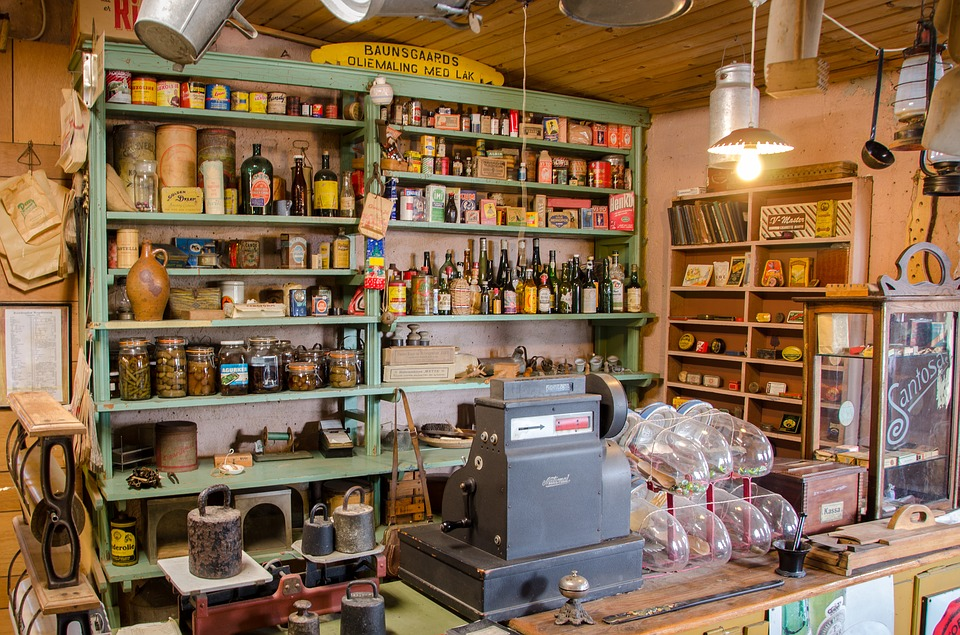
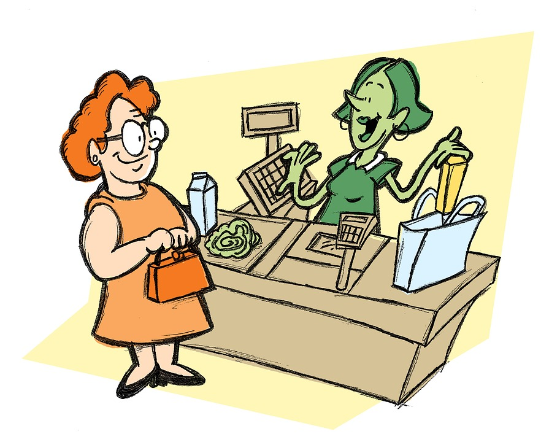

If you think of a supermarket as being a computer, then the Central Processing Unit (CPU) would be the cash register. The clock speed of the CPU can be thought of as the speed at which the cashier scans the items at the cash register. The faster the cashier is at scanning all of the items in your basket, the faster you will be on your merry way (the faster the clock speed). In a way, you are just one of the ‘instructions’ (people) the supermarket has to process in order to move on to the next instruction (person).

Now, picture yourself in a supermarket where there is only one cash register. This would be similar to having a single core CPU. If the queue has 10 people ahead of you, you would probably want the cashier to be scanning items as fast as possible so that you can be out sooner.

What if there was a second register. Each line would probably have 5 people each in line and if the cashiers work at the same speed, you would finish twice as fast. That’s what a dual core processor would look like. If your computer has two separate tasks to be completed at the same time, each core can handle the instructions to make everything more efficient. As you can imagine, if you have two more cash registers, it’ll split to about 2-3 people for each line and the lines would finish that much faster. This is what a quad core processor would look like.
If you had one cashier who was able to handle two queues at the same time, that would be known as hyper-threading. So what you have is one core that seems like two and is doing two instructions at the same cash register! As logic dictates and is the case with CPUs, 2 lines for 2 cash register is definitely a better system than 2 lines for one cash register.
If the cashier who is scanning your items is also the person who is placing those items into bags, as you can imagine, there’s going to be a bit of an efficiency issue. That cashier will have to scan and then bag in that order. When a bag is full, the cashier will have to move the bag to create space and open up a new bag. What if, instead, you had one cashier and a separate employee placing all of the items into a bag? You’ll likely see a pretty big jump in efficiency. This is what turbo boosting is. It’s all about making your system more optimized.